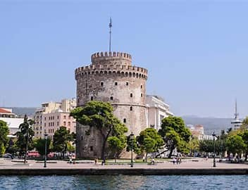

My name Zacharias Zachariadis. I grew up in Greece, Thesaloniki where my love for F1 and technology first developed. I enrolled in Software development because it gives access to so many different opportunities. The main part of technology that I enjoy most about is how it makes everything much easier and you can connect with others in a virtual world and have fun.

The main thing I am passionate about and what I wanted to be when I was young is F1. F1 is all about new technology being put into cars to either make them more durable and reliable or faster, the main point of F1 is help with the research of new technology to be put into cars we drive today. In F1 they have the kinetic energy recovery system which creates electricity by braking and not being on the gas pedal. That system has been put into many different electric and hybrid cars.
As a hobby I mostly go with my bike to Ikea and behind there are some trails which I like to ride. These trails contain a lot of different features like, little hills, big hills, curves and banked turns. There are some jumps as well which only very professional bikers go on. There are features that include you going down an almost 90-degree rock wall, which I did once and never did again. I have also gotten hurt on the trails, which was mostly my fault. There was a big jump coming up and I bailed on it at the last second which probably did more damage than if I messed up the jump’s landing.
Another thing I am passionate about is cars. Everything about cars and all that has to do with them. In the future, I hope that I could have my dream car in my garage and maybe work on it on my off days and take it out for a spin. My dream car is an RX-7 which is a Mazda car that was made in the 19s if memory tracks. The main thing I love about the car is that It has a unique engine which makes it sound different than any other car on the road.